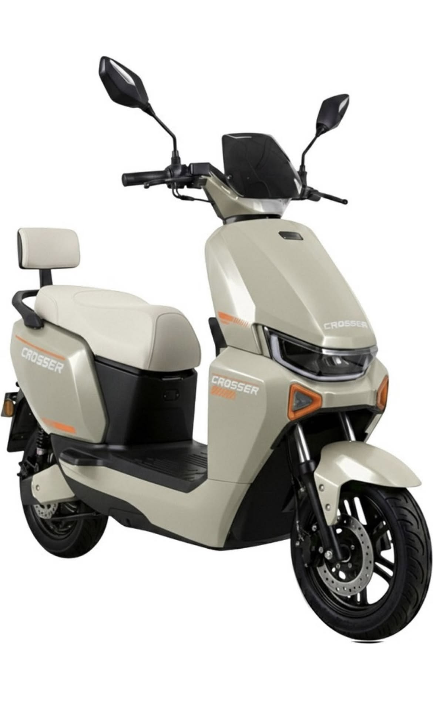

Energia para ir
Recarga elétrica para planejar seus trajetos. Consulte os requisitos de carregamento de cada modelo.
O FUTURO JÁ ESTÁ NA RUA
Seu dia merece novos caminhos. Explore nossas fotos e descubra uma nova forma de viver a cidade sobre duas rodas.
Mais leve para a rotina.
Uma nova maneira de ir além.

Novos caminhos.
Outra energia.
01 / UM NOVO RITMO
Do primeiro compromisso ao último passeio, descubra o que muda quando a sua mobilidade ganha uma nova energia.
Recarga elétrica para planejar seus trajetos. Consulte os requisitos de carregamento de cada modelo.
Uma experiência de condução com menos ruído do motor e mais conexão com o seu caminho.
Encontre a opção que combina com seus percursos, suas necessidades e seu jeito de viver a cidade.
02 / ENCONTRE SEU ESTILO
Explore as fotos, encontre o seu estilo e converse com a equipe para confirmar modelos, valores e disponibilidade.
Fotos enviadas pela loja. Nomes descritivos das imagens; confirme a identificação e as características de cada modelo no atendimento.
04 / SEM COMPLICAÇÃO
Depende da distância percorrida, do tipo de trajeto e da sua necessidade de uso. A equipe pode ajudar você a comparar as opções e as especificações de cada modelo.
O carregador, a tomada necessária e o tempo de recarga variam conforme o modelo e a bateria. Consulte as orientações do fabricante antes de carregar.
As exigências dependem da classificação e das características do veículo. Confirme a documentação do modelo e as regras vigentes com a equipe e o órgão de trânsito.
Entre em contato para confirmar os modelos em estoque, valores, condições de pagamento e possibilidades de entrega.
O PRÓXIMO PASSO É SEU
Conte como você quer se mover.
A equipe ajuda a encontrar o seu próximo caminho.